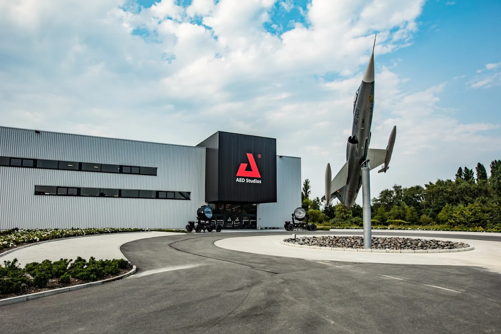
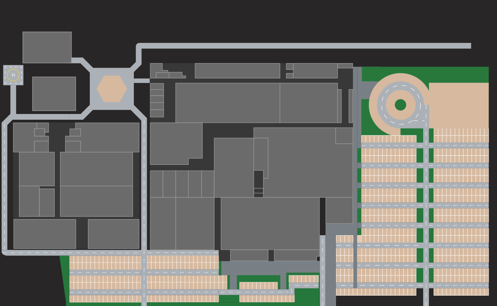
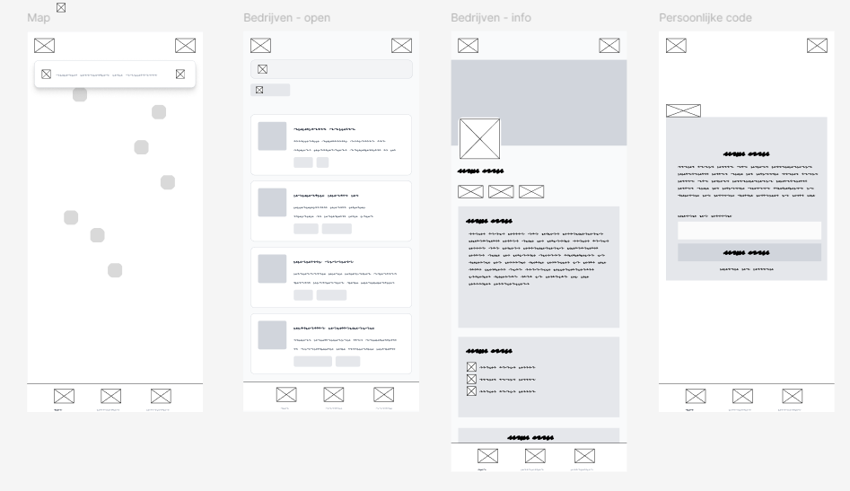

APP DESIGN & UX/UI
Studio Connect

Project Overview
AED Studios is een grote productie- en eventlocatie waar verschillende bedrijven, producties en bezoekers samenkomen. Het doel van Studio Connect was om deze verschillende gebruikers op een eenvoudige manier met elkaar te verbinden.
De uitdaging was om een digitale ervaring te creëren die bezoekers helpt om hun weg te vinden, bedrijven op de site zichtbaar maakt en relevante informatie op één centrale plek verzamelt.
Tools & Technologieën
Bekijk prototypeDe Uitdaging
Gebruikers helpen om snel de juiste informatie en locatie op AED Studios te vinden, zonder dat de ervaring ingewikkeld wordt.
De Oplossing
Een centrale digitale ervaring waarin bedrijven, locaties, producties en relevante informatie op een overzichtelijke manier samenkomen.
Het Design Proces
Van eerste onderzoek tot een volledig uitgewerkt interactief prototype.
Kick-off & Discovery
Het project startte met een kick-off waarin we de opdracht, doelgroep en context van AED Studios in kaart brachten.

Concept & Structuur
We onderzochten hoe de verschillende onderdelen van de ervaring logisch konden worden georganiseerd. Hierbij werd gekeken naar navigatie, informatie en de verschillende gebruikers.

UI Design & User Flows
De verschillende schermen en gebruikersflows werden uitgewerkt. Hierbij lag de focus op een duidelijke navigatie en een herkenbare visuele identiteit.

UI Design & Prototype
Na het uitwerken van de structuur werden de definitieve interfaces ontworpen en samengebracht in een interactief prototype.

Development & Oplevering
Het prototype werd vertaald naar een werkende digitale ervaring. Hierbij werd gewerkt met moderne web- en apptechnologieën.

Resultaten & Impact
Gekozen als beste project uit 3 groepen
Studio Connect werd door de opdrachtgever geselecteerd als beste project. Het concept combineert een duidelijke gebruikerservaring met een visuele stijl die aansluit bij de identiteit van AED Studios.
Bekijk het prototype